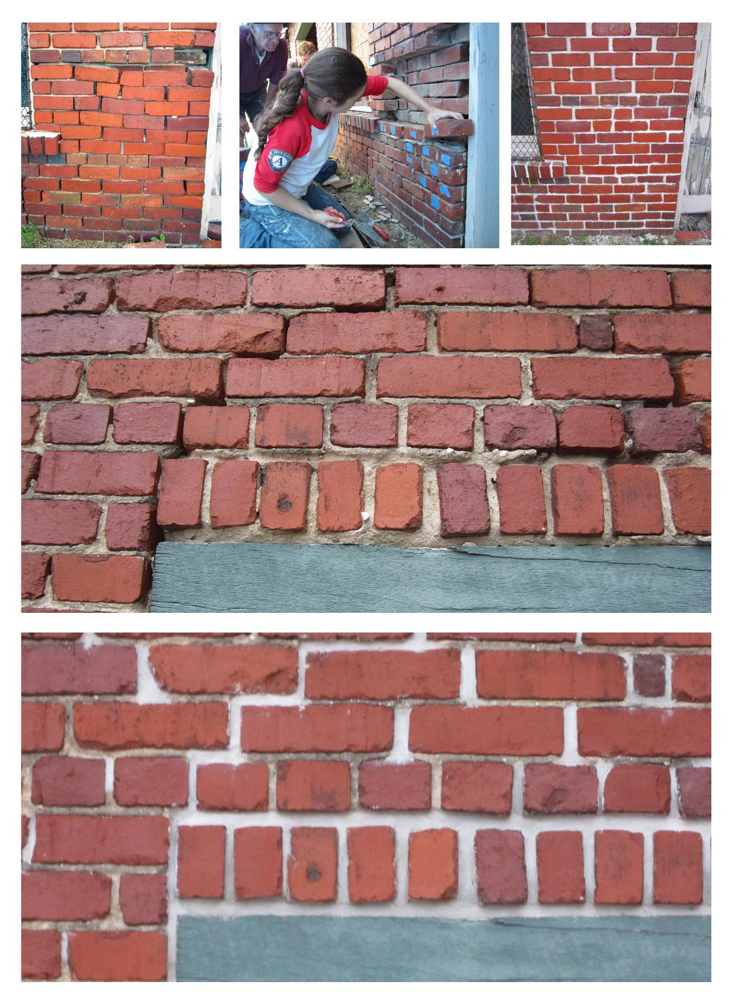

Throughout my youth art projects had a huge range of mediums from crayons to oil pastels. I was always into art class in grade school, and took and taught at art camps. In high school I took as many Art Electives as I could and worked part-time at a Hands-On Art Studio, where I also ran children's art camps over the summer.
First Step Mural: Under the Sea Mural at First Step Daycare

Historic Building Craftsmanship as an AmeriCorp Volunteer with the Appalachian Forest Heritage Area Historic Preservation TeamHistoric Building Craftsmanship at the Pennsylvania Historic Museums Commission
As I ventured into jobs and volunteer positions I found ways to apply my creative skills to many projects and tasks.
Beginning in 2019, I joined my partner Grant Turner and we began production on a ambitious multimedia project: The Evening Hue. The Evening Hue is an action-adventure fantasy about